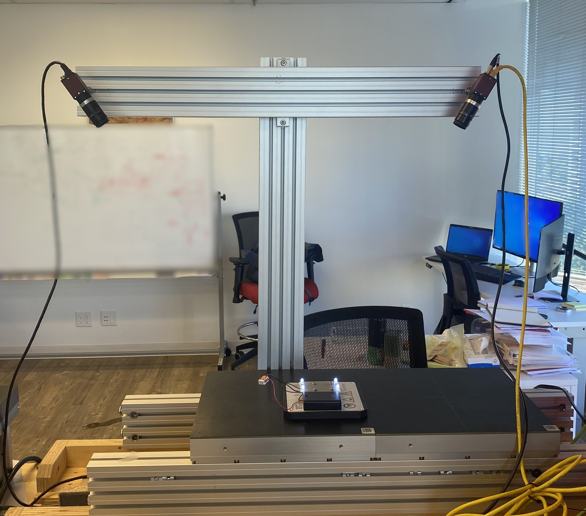

Figure 1: LED Frame Mounted on the XPlanar Mover.

Figure 2: Full Stereovision Camera Setup.
This is a project completed while on internship with Beckhoff Automation in the XPlanar R&D Lab. The objective was to measure the 6DOF position of an XPlanar mover using a stereovision system. The system was designed to be implemented directly within the TwinCAT environment, leveraging the computer vision tools for real-time integration. The objective of this project is to measure the 6DOF pose of a Beckhoff XPlanar mover using a custom stereovision tracking system.
The physical and software architecture relies on tight integration between industrial hardware and native TwinCAT libraries:
Figure 1: LED Frame Mounted on the XPlanar Mover.

Figure 2: Full Stereovision Camera Setup.